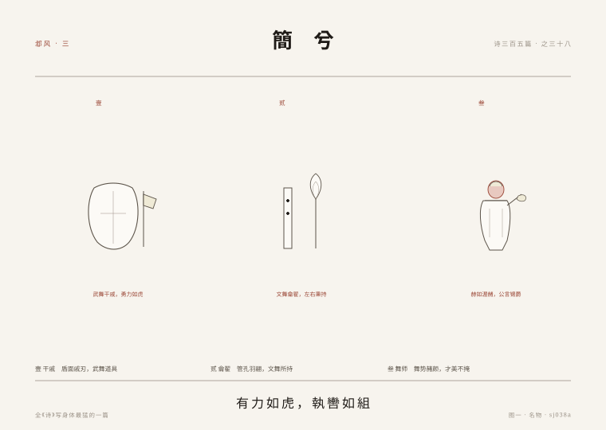
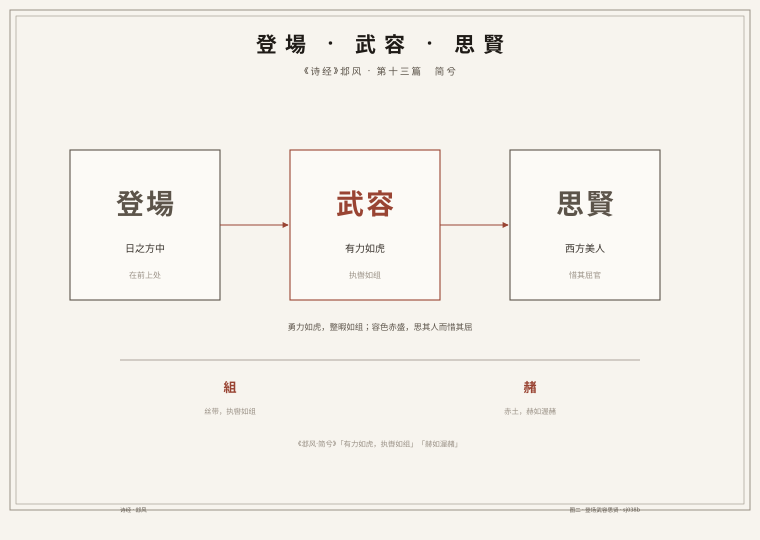

第三十八篇 简兮
邶风 · 之三 SJ038
朗读 · 普通话
依经文正文朗读，句读从文；不配乐、不改速、不加拖腔。全库同一音色（豆包 TTS），非播音员录制。
一 解题
诗三判：
- 谁在说：公庭观舞之人（旧说卫之贤者仕于伶官）。他看一位高大舞师演万舞：登场定位，武舞有力如虎，文舞执龠秉翟，末章落到所思——西方那位美人。
- 说什么事：简兮简兮，正要演万舞；日正当中，他在前列上位。硕人魁梧，公庭万舞；勇力如虎，执辔如持丝带。左手执龠，右手秉翟；容色赤盛如厚渍赭土，公说赐他酒爵。山上有榛，低隰有苓；所思是谁？西方美人；那位美人啊，是西方之人。
- 为何编在此：前几篇写弃、写役、写不应，此篇写艺与身。全《诗》写身体最猛的一篇：虎之勇、组之整、渥赭之盛，都落在舞容上；末章思其人，惜其屈于伶官。
《毛序》：「《简兮》，刺不用贤也。卫之贤者仕于伶官，皆可以承事王者，故贱之而不得。」——以为贤者屈居乐官，刺不用贤。
朱子《诗集传》：「贤者仕于伶官，而其才美有不可掩者，故自言其情如此。」——朱子从才美不可掩一边读。
本库的看法：这首诗的骨在「有力如虎」写舞容——全《诗》写身体最猛的一篇。
二章武舞写勇力，三章文舞写容饰；「执辔如组」是整暇，「赫如渥赭」是赤盛。末章「美人」是壮美之舞师，不是女子；思其人，是惜其才艺，不是男女之思。万舞兼文武：武舞干戚，文舞龠翟，一篇之内两舞俱见。
二 经文
第一章
簡兮簡兮，方將萬舞。日之方中，在前上處。
第二章
碩人俣俣，公庭萬舞。有力如虎，執轡如組。
第三章
左手執龠，右手秉翟。赫如渥赭，公言錫爵。
第四章
山有榛，隰有苓。云誰之思？西方美人。彼美人兮，西方之人兮。
分章：毛传、朱子皆四章，章六句。一章登场；二章武容；三章文容与受爵；四章托物思人。由场及身，由身及思，章法由外入内。
三 韵读
| 一 |
舞、處（魚部）；中（東部） |
魚部／東部 |
| 二 |
俣、舞、虎、組 |
魚部 |
| 三 |
龠、翟（藥部）；赭、爵（鐸部） |
藥部／鐸部 |
| 四 |
榛、苓、思、人 |
真部 |
一章魚部宽展写登场，東部沉实落于「中」；二章魚部一韵到底，虎与组一猛一整；三章藥部、鐸部入声短促，写龠翟在手、赭颜受爵；四章真部绵长，落到「人」字思远。全篇落脚声是「西方之人兮」——思其人，惜其屈。
四 字义与名物
- 簡——大，雄壮。一说鼓声簡簡。不是「简单」。
- 方將——将要。
- 萬舞——武舞、文舞总称；武舞执干戚，文舞执龠翟。
- 日之方中——日正当中。
- 在前上處——在前列上位。
- 碩人——高大之人。
- 俣俣（yǔ yǔ）——魁梧雄壮貌。
- 有力如虎——勇力如虎。
- 執轡如組——执缰绳如持丝带，言整暇不乱。組：丝带。
- 龠（yuè）——管乐器，文舞所执。
- 秉——持。
- 翟（dí）——雉羽，文舞所秉。
- 赫——赤盛貌。
- 渥——厚渍、浸润。
- 赭（zhě）——赤土，红赭。
- 公——卫公。
- 錫爵——赐酒爵。錫通「賜」。
- 榛——榛树，灌木结实。
- 隰——低湿地。
- 苓——甘草一类，一说卷耳。
- 云誰之思——所思为谁。
- 美人——舞师，壮美之人。不是女子。
- 西方之人——指舞师来自西方。
五 今译
第一章
雄壮啊雄壮，正要演万舞。日正当中，他在前列上位。
第二章
高大魁梧，公庭之上演万舞。勇力如虎，执辔如持丝带。
第三章
左手执龠，右手秉翟。容色赤盛如厚渍赭土，公说赐他酒爵。
第四章
山上有榛，低隰有苓。所思是谁？西方那位美人。那位美人啊，是西方之人。
译注：「简」译大、雄壮；「万舞」兼文武；「组」译丝带，喻整暇；「渥」译厚渍；「锡」通赐；「美人」译壮美舞师，非女子。
六 章旨
一章：登场定位。日中庭前，万人瞩目。
二章：武舞容势。硕人有力，驭辔整暇。
三章：文舞容饰。龠翟在手，赭颜受爵。
四章：托物思人。山榛隰苓，所思西方美人。
一章见场，二章见力，三章见饰，四章见思。身体之勇、周旋之整、容色之盛，皆从舞容写出；末章一思，把场上之人收到心里。
此即本卷观人之诗：彼思劳、思弃，此思艺与才。
七 诗教
- 赋：直陈舞容与容饰；虎、组、渥赭皆即形写势，赋而兼比。
- 观：可观一「壮」。身体之勇、周旋之整，观人才艺之美与器局。
- 群：公庭万舞，与公侯宾客同观；舞师在群中见重。
- 怨：无怨。末章思其人，惜其屈于伶官；惜而不谤，思而不贬。
八 分寸与边界
- 不可把「美人」解作女子。美人指壮美之舞师，是男子；末章非男女之思。
- 不可把「万舞」只当一种舞。万舞兼武舞干戚、文舞龠翟，二章武、三章文。
- 不可把「执辔如组」解作真驾车。是喻舞之整暇，如驭马持组，非实事。
- 不可把「赫如渥赭」解作脸红害羞。渥赭是厚渍赤土，写容色赤盛，非羞赧。
- 不可把「简兮」解作「简单」。简为大、雄壮，一说鼓声簡簡。
九 存疑
- 作诗之人：毛序刺不用贤；朱子以为贤者自言；一说女子思舞师。本库取观舞思贤，不采女子说。
- 「简」字：大一说，鼓声一说。本库从大，兼存鼓声。
- 「西方美人」：西方指周西一说，指舞师籍贯一说。本库从其人来自西方。
- 「苓」：甘草一说，卷耳一说。本库从甘草一类。
- 「公言锡爵」：公赐酒一说，舞毕赐爵一说。本库从公赐酒爵。
十 跨典
- 《左传·隐公五年》「万舞，所以习戎事也」——万舞与武事相系；武舞干戚，本于军容。
- 《鄘风·君子偕老》「玼兮玼兮，其之翟也」——翟羽服饰对读；彼写服饰之盛，此写秉翟之容。
- 《论语·述而》「志于道，据于德，依于仁，游于艺」——艺游之美；舞亦六艺之一。
- 《小雅·伐木》「伐木丁丁，鸟鸣嘤嘤」——鸟鸣求友，与此思人同旨。
- 《楚辞·九歌》「灵偃蹇兮姣服，芳菲菲兮满堂」——舞容之盛，后世祭歌与之相近。
十一 双卡与图
双卡五对：
| 簡（大、雄壮） |
简单（误训） |
| 美人（壮美舞师） |
女子（误读） |
| 組（丝带） |
组织（误训） |
| 渥赭（厚渍赤盛） |
脸红害羞（误读） |
| 武舞干戚／文舞龠翟 |
万舞一舞（误解） |

图一 · 干戚·龠翟·渥赭舞师 名物图

图二 · 登场—武容—思贤 义理图
读图三处：
- 干戚画盾与斧：武舞道具识别在盾形与斧柄；名物图取盾面、戚刃、柄三处特写。
- 龠翟画管乐与羽柄：文舞道具识别在管孔与羽翮；不画整支舞队。
- 义理三章以「思贤」收尾：登场—武容—思贤，箭头由场及身；末尺标出「組」「赭」，整暇与赤盛皆舞容。